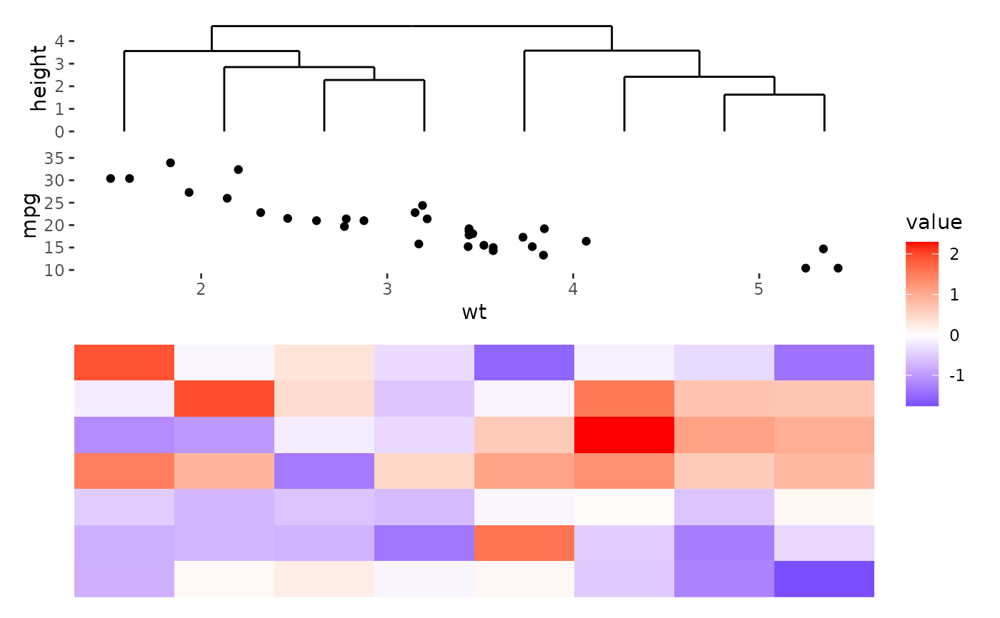

![[Experimental]](figures/lifecycle-experimental.svg)
The ggfree() function allows you to incorporate a ggplot object into your
layout. Unlike ggalign(), which aligns every axis value precisely,
ggfree() focuses on integrating plots into the layout without enforcing
strict axis alignment.
Usage
ggfree(data = waiver(), ..., size = NULL, active = NULL)
# Default S3 method
ggfree(data = waiver(), mapping = aes(), ..., size = NULL, active = NULL)Arguments
- data
The following options can be used:
NULL: No data is set.waiver(): Inherits the data from the layout matrix.A
function(including purrr-like lambda syntax): Applied to the layout matrix to transform the data before use. To transform the final plot data, please usescheme_data().A
matrix,data.frame, or atomic vector.
- ...
<dyn-dots> Additional arguments passed to
fortify_data_frame().- size
The relative size of the plot, can be specified as a
unit. Note that forcircle_layout(), all size values will be interpreted as relative sizes, as this layout type adjusts based on the available space in the circular arrangement.- active
A
active()object that defines the context settings when added to a layout.- mapping
Default list of aesthetic mappings to use for plot. If not specified, must be supplied in each layer added to the plot.
ggplot2 specification
ggalign initializes a ggplot object. The underlying data is created using
fortify_data_frame(). Please refer to this method for more details.
When used in quad_layout()/ggheatmap(), if the data is inherited from the
quad_layout() and the other direction aligns discrete variables, following
columns will be added:
.extra_panel: Provides the panel information for the column (left or right annotation) or row (top or bottom annotation)..extra_index: The index information for the column (left or right annotation) or row (top or bottom annotation).
Examples
ggheatmap(matrix(rnorm(56), nrow = 7)) +
anno_top() +
align_dendro() +
ggfree(mtcars, aes(wt, mpg)) +
geom_point()
#> → heatmap built with `geom_tile()`
